Fullscreen mode
Just press »F« on your keyboard to show your presentation in fullscreen mode. Press the »ESC« key to exit fullscreen mode.
Overview mode
Press "Esc" or "o" keys to toggle the overview mode on and off. While you're in this mode, you can still navigate between slides, as if you were at 1,000 feet above your presentation.
Unix/Linux
Lesson 3
Author: Egoshkin Danila Igorevich
Plan
- Unix vs Linux - difference
- Unix
- Linux
- Unix application area (сфера применения)
- Linux distro installation
Multics - Bell Labs
Multiplexed Information and Computing Service 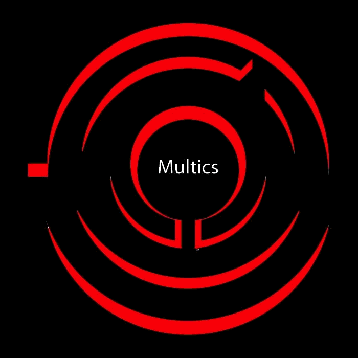Multics - Bell Labs
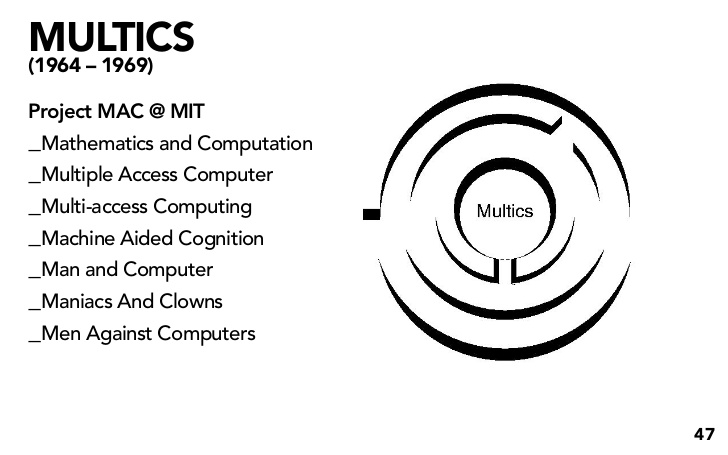Unix
Uniplexed Information and Computing ServiceОдносложный информационно вычислительный сервис
Unix - DenisRitchie

Unix - KenThompson
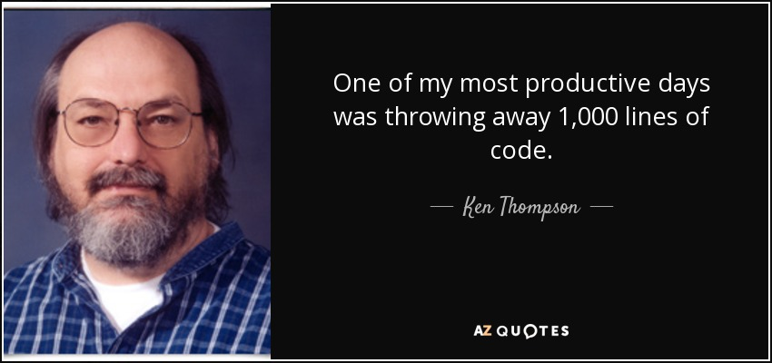Unix - Bell Labs - 1969
Unix - Bell Labs - 1973 - C

Linux (Minix) from Unix
Linus Torvalds

Linux - Frix
Unix application area (сфера применения)
Quest: what kind of OS is this?

PocketBook
Satellite - GPS
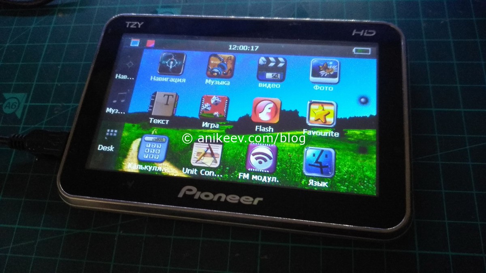Linux vs Windows CE (Compact Embedded)
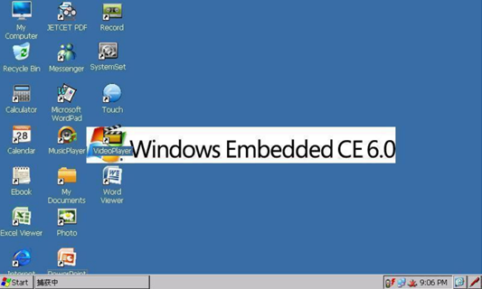Mobile Google
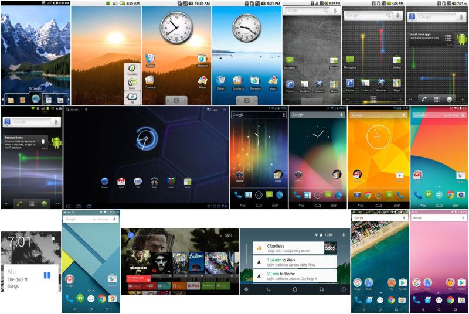Smart Home
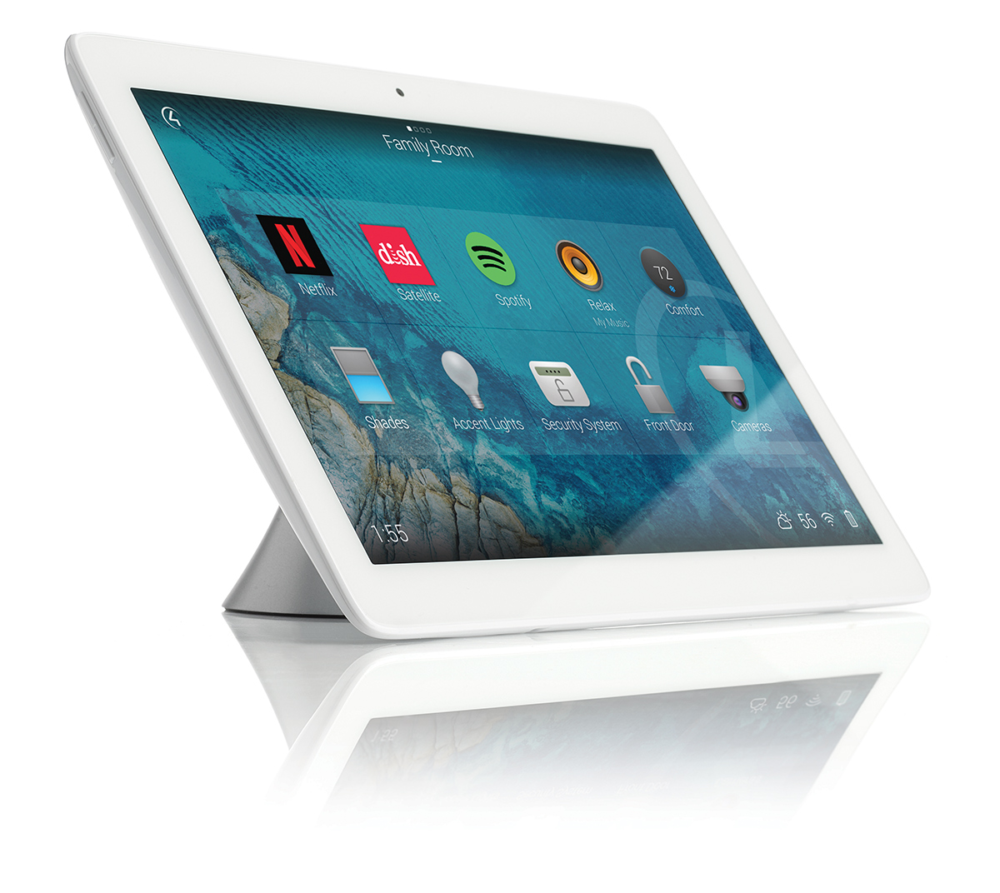KolibriOS
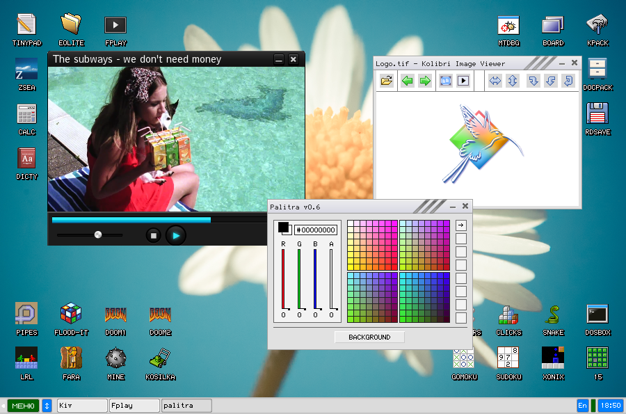ReactOS
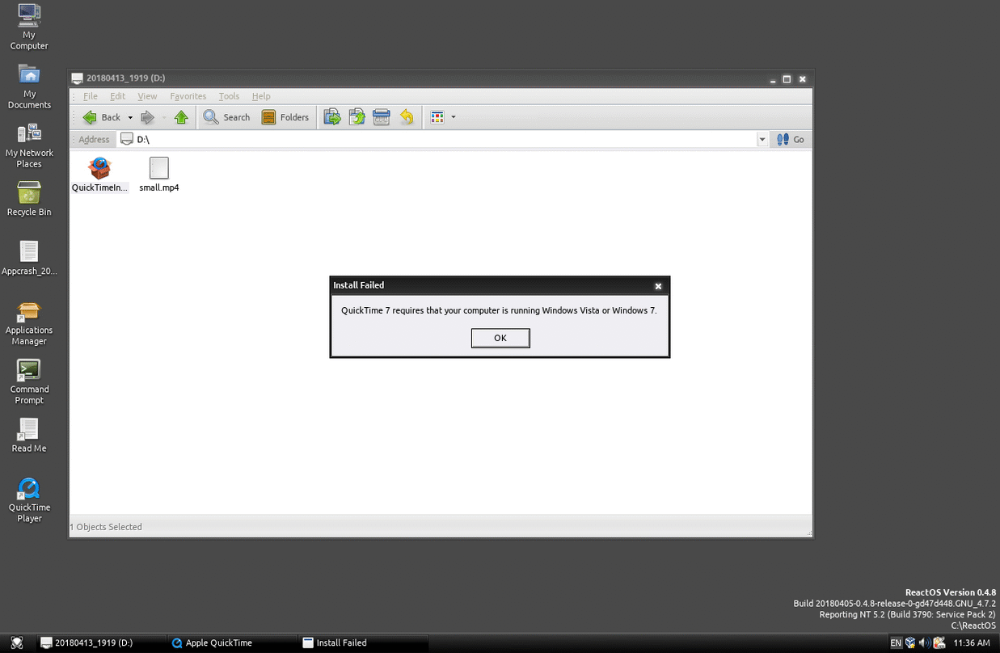???
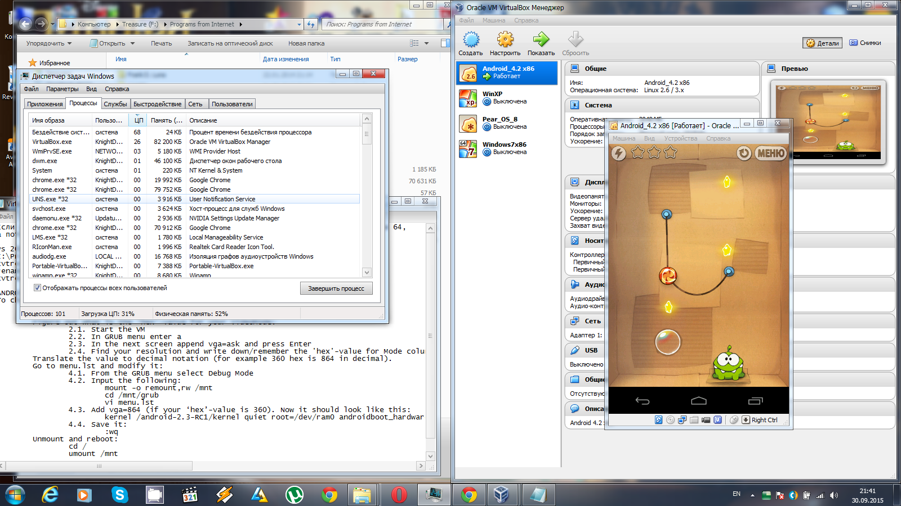Steam Deck - Valve - SteamOS
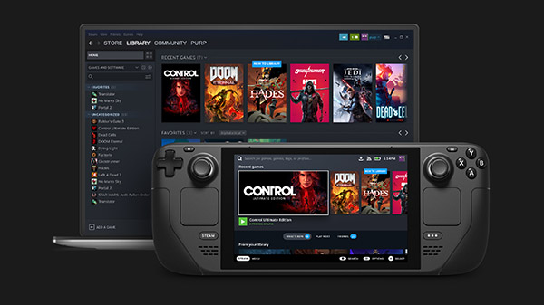Amazon the tablet
Apple Studio Display - DISPLAY 64 GB???
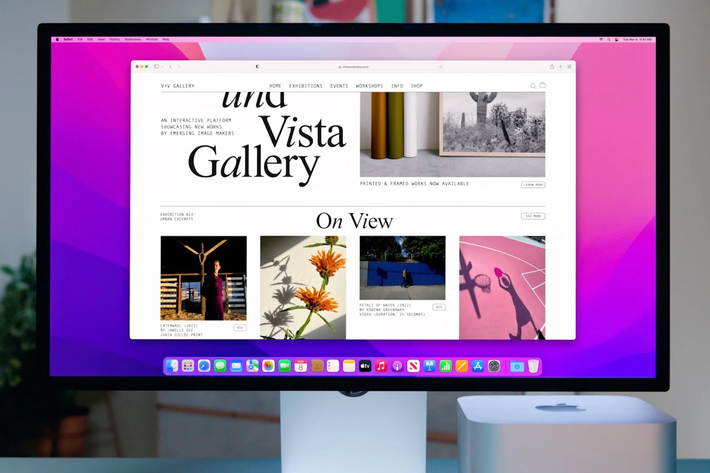???
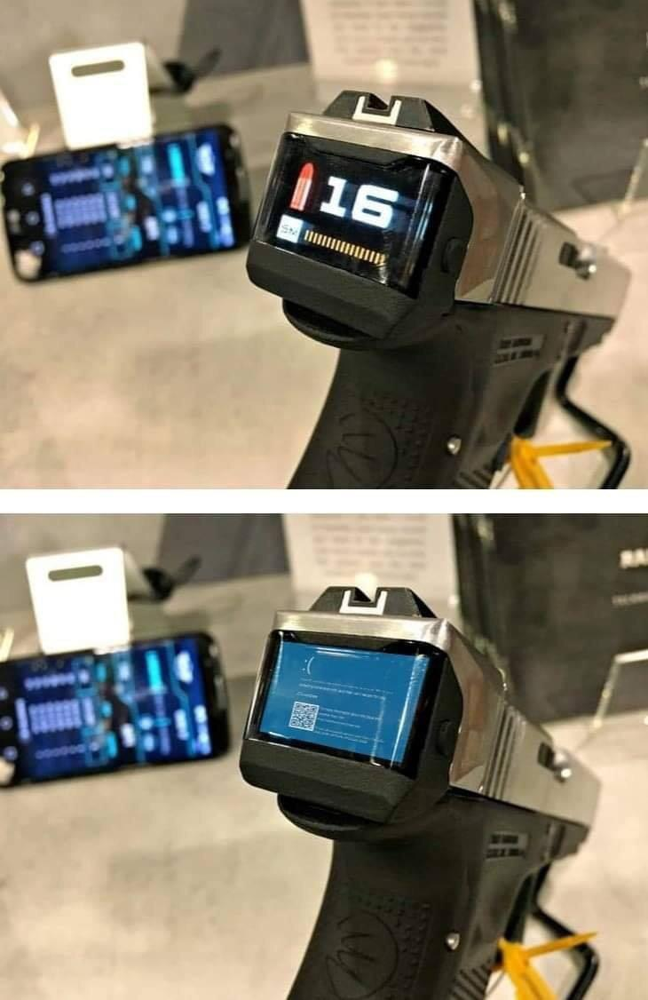BSOD???
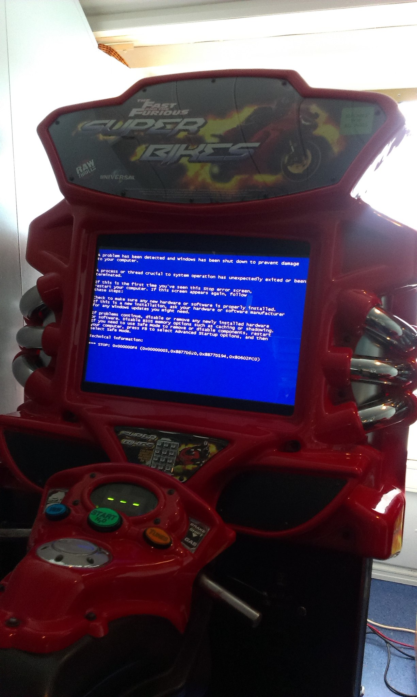So why is Linux so popular?
.jpg)
OpenSource
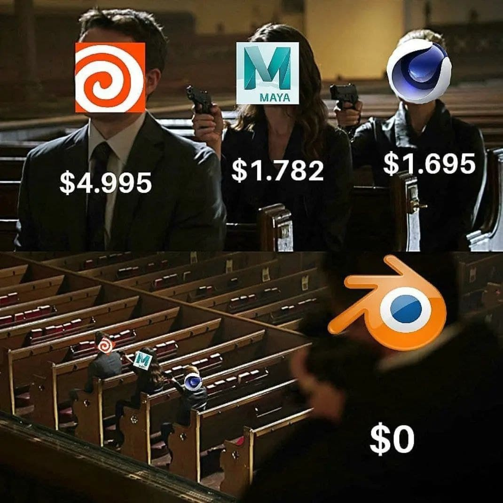Garage
Links: Linux<-Minix<-Unix history
https://www.linux.org.ru/forum/desktop/1374712 https://wiki.merionet.ru/servernye-resheniya/84/linux-vs-unix-v-chem-raznica/